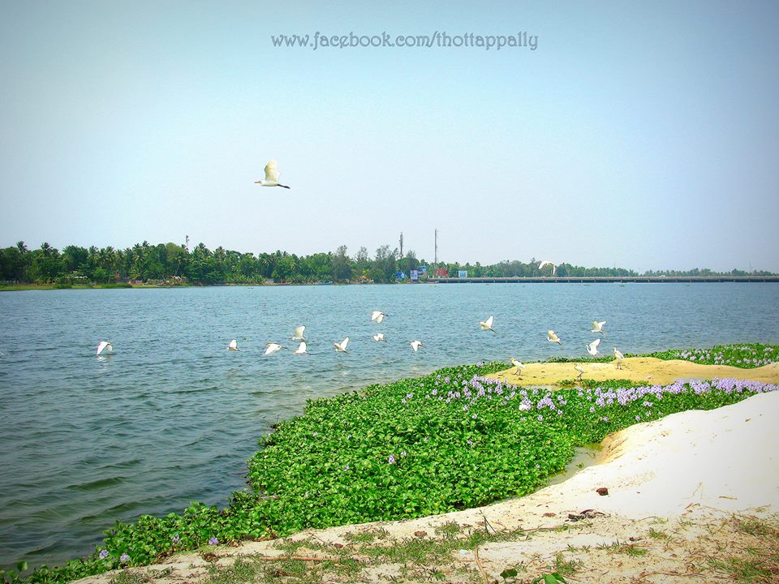
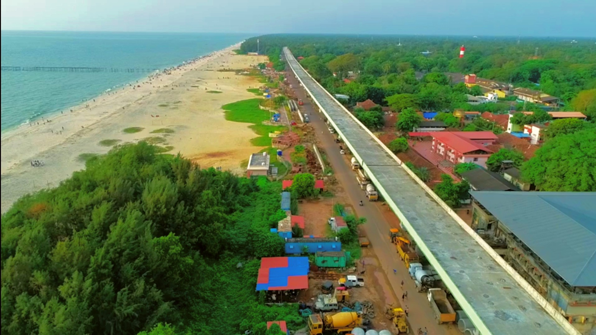

ALLEPPY
Alleppey, also known as Alappuzha, is a picturesque town located in the southern Indian state of Kerala. Renowned for its intricate network of backwaters, Alleppey is often referred to as the "Venice of the East." The town is a hub for houseboat cruises, offering visitors a unique and tranquil experience as they glide through the serene backwaters surrounded by lush greenery and quaint villages. The annual Nehru Trophy Boat Race, held on the Punnamada Lake, is a major highlight and attracts thousands of spectators, showcasing the traditional snake boat races that are deeply rooted in the local culture.
 Apart from its backwaters, Alleppey boasts beautiful beaches along the Arabian Sea coast. Marari Beach, located just a short drive from the town center, is a pristine stretch of golden sand lined with coconut palms, offering a serene escape. The town is also known for its vibrant festivals, cultural events, and traditional art forms like Kathakali and Mohiniyattam. With its rich cultural heritage, natural beauty, and unique water-based experiences, Alleppey stands as a must-visit destination for those seeking a tranquil and culturally immersive experience in the heart of Kerala.
Alleppey's history is deeply intertwined with the cultural and trade dynamics of the region. The town's origins can be traced back to the 9th century when it served as a major port and trading center for spices, particularly pepper. Over the centuries, Alleppey became a significant hub for maritime trade, attracting traders from various parts of the world, including the Portuguese, Dutch, and later, the British. The strategic location of Alleppey along the Arabian Sea contributed to its economic importance and cultural diversity, leaving an indelible mark on its historical landscape.
During the colonial period, Alleppey played a crucial role in the spice trade, and its waterways became vital for transporting goods. The British established Alleppey as a major coir (coconut fiber) trading center, given the abundant coconut palms in the region. The construction of canals and waterways, such as the Alleppey Canal, further enhanced the town's connectivity and facilitated the transportation of goods. The legacy of this historical trade network is still visible in the remnants of colonial architecture and the intricate canal systems that define the town today.

Post-independence, Alleppey continued to thrive as a center for agriculture, coir production, and tourism. The Kerala backwaters, which surround Alleppey, gained international acclaim for their unique beauty, and houseboat tourism emerged as a significant economic driver. The town's rich history, influenced by diverse cultures and economic activities, has shaped Alleppey into the vibrant and culturally significant destination it is today.